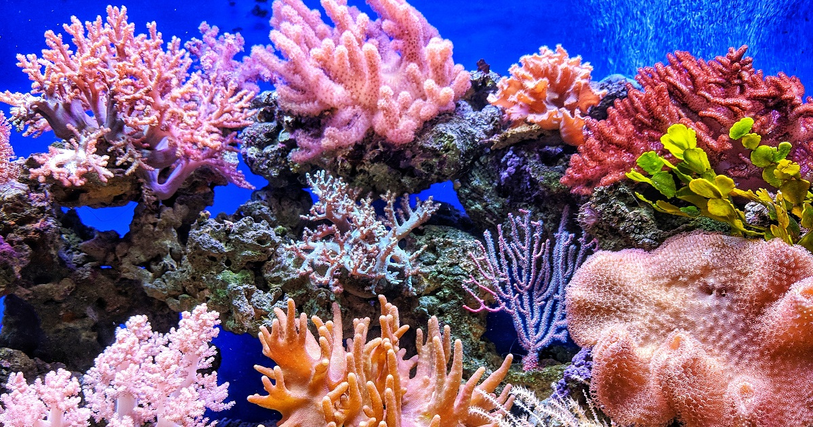

Les récifs coraliens

Les Coraux
- Les coraux sont des animaux marins appartenant à la classe des Cnidaires.
- Ils forment des colonies de petits polypes qui produisent des squelettes calcaire (exosquelettes) pour se protéger.
- Les coraux peuvent être durs ou mous, mais les coraux durs sont les principaux bâtisseurs de récifs.
- Les récifs coralliens sont formés par l'accumulation des squelettes de coraux durs sur de longues périodes.
- Ils abritent une grande diversité de vie marine, parfois surnommée le "jardin de la mer".